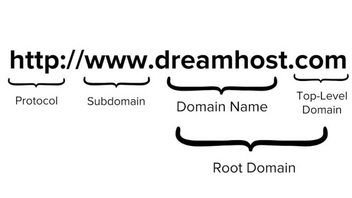

Como funciona a internet?
Após falarmos um pouco sobre a criação da internet e sua história ao decorrer dos anos neste Artigo, agora vamos falar um pouco sobre como a internet funciona e como ela chega até você.
Bits e Bytes

O bit (simplificação para dígito binário, em inglês, binary digit) é a menor unidade de informação que pode ser armazenada ou transmitida, usada na Computação e na Teoria da Informação. Um bit pode assumir somente 2 valores: 0 ou 1, corte ou passagem de energia, respectivamente.
O byte é um dos tipos de dados integrais em computação. É usado com frequência para especificar o tamanho ou quantidade da memória ou da capacidade de armazenamento de um certo dispositivo, independentemente do tipo de dados.
A codificação comum de byte é de 8 bits, embora possa ter outras quantidades, como 7. O byte de 8 bits é mais corretamente chamado de octeto
Multiplos de byte
No dia a dia, estamos bem familiarizados com a memoria de armazenamento de certos disposivitos, por exemplo, um celular com capacidade de armazenamento de 128GB ou um cartão de memória de capacidade de 64GB. Porém muitos são sabem o que é um gigabyte (GB).
O byte, que como falamos é um conjunto de 8 bits, tem seus multiplos, sendo alguns dele o kilobyte (KB), megabyte (MB) ou como citamos acima, o gigabyte (GB). 1 kilobyte (KB) por exemplo, é um conjunto de 1024 bytes (210) bytes, já o megabyte (MB) é formado por 1024 kilobytes (KB) (220) bytes, assim por diante.
Sinais
Mas é claro que o que circula dentro do computador não são pequenos números, são ondas (sinais). No caso de equipamentos eletrônicos processados, as ondas se parecem com as representadas a seguir.
A maioria das transmissões entre continentes não é realizada pelos Satélites, os satélites possuem uma limitação de tráfego e sofrem muito com interferências, e é por isso que os cabos de fibra ótica devem ser passados pelos oceanos.

Quando esses cabos chegam ao continente, eles se interligam a outros sistemas de comunicação. Alguns dos sistemas utilizados sempre foram os sistemas telefonia tradicional, os sistemas de TV a cabo, os sinais via satélite e até as simples redes de radiofrequência.
O problema é que os sistemas diferentes transmitem sinais em formatos diferentes. Isso dificultaria a comunicação entre pontos, se não fosse um processo de “conversão”, mais conhecido como MODULAÇÃO.
De uma maneira bem resumida, modular é conseguir ler uma onda no formato A compatível com um tipo de sistema de comunicação e convertê-la para um formato B, compatível com outro tipo de sistema. E é exatamente para isso que servem aqueles aparelhos que você instala em sua casa para começar a receber Internet doméstica.
Uma das funções desse aparelho é MODULAR os sinais que saem e DEMODULAR os sinais que chegam. E é por isso que chamamos esse aparelho de MODEM. A função MODEM desses aparelhos é apenas uma das características do produto. Na verdade, esse dispositivo é um GATEWAY, que vai se ligar aos ROTEADORES do seu provedor de acesso.
Para enviar um sinal de um dispositivo A para um dispositivo B, podemos ter várias rotas. Quem vai definir a melhor rota são os ROTEADORES que compõem a rede. Os pacotes de dados podem chegar em seu computador por diversas rotas diferentes, tudo vai depender do tráfego no momento da transmissão.
O cliente e o servidor
Imagine que você está no seu celular tentando acessar um site. O seu celular é o CLIENTE e está pedindo algo pela Internet. Ao descobrir onde está o site, a máquina que ele está hospedando será o SERVIDOR, que vai fornecer os arquivos que compõem o site. O caminho que vai criar uma ligação entre o servidor e você (cliente) vai ser decidido pelos roteadores da Internet.
Na Internet existem vários servidores:
- Servidor de site (WebHost)
- Servidor de streaming
- Servidor de arquivos
- Servidor de e-mail
- Entre outros...
Quando você “se conecta” à Internet, recebe uma identificação única. Essa identificação é um ENDEREÇO IP (TCP/IP)
Os IPs mais antigos (IPv4) usam 4 octetos, que são conjuntos de 8 bits separados por pontos, totalizando 32 bits por identificador.
Ex: 123.45.67.89 = 01111011.00101101.01000011.01011001
Os IPs mais modernos (IPv6), usam 128 bits ao todo (o que é 4x mais bits que o IPv4).
Ex: 2001:0db8:85a3:08d3:1319:8a2e:0370:7344
DNS (Domain Name System)
Domain Name System (DNS), ou sistema de nomes de domínio. Eles são como grandes “listas telefônicas”, criando uma ligação entre o nome do site e o número de IP relacionado a ele
Domínio e Hospedagem
Quando você acessa um site, precisa saber uma URL (Uniform Resource Locator) para poder acessá-lo. A parte principal dessa URL é o domínio.
O domínio é um nome único que vai conseguir identificar o seu servidor ou as suas páginas. Para conseguir um domínio, você deve pagar pelo direito de usá-lo por um período mínimo de 1 ano.
TLD (Top Level Domain)
.com, .gov.br, .edu.br. Essas terminações, são chamadas de TLD (Top Level Domain). indicam tecnicamente que o site é de uma instituição comercial, governamental, educacional, ONGs, etc.
TLD (Top Level Domain)
GTLD (Generic top-level domain): sem indicação de país. Alguns dos domínios genéricos são .com, .net, .gov, .org, .io, .info, .online, .store, etc.
ccTLD: (Country code top-level domain): São TLDs com designação do país. Alguns dos domínios desse tipo são .com.br, .edu.us, .co.fr, .jp, .es, etc.
Sub-domínio
WWW é um subdomínio que aponta diretamente para o seu servidor web padrão e não faz parte do domínio.
Exemplos de sub-domínio
- www.google.com Dá acesso ao site principal do Google
- images.google.com Dá acesso ao Google Imagens
- maps.google.com Dá acesso ao Google Maps
- mail.google.com Dá acesso ao Gmail